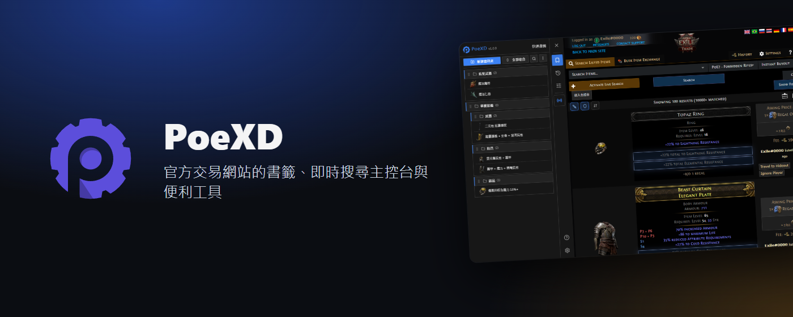

作品
業餘時間做的專案。
關於 PoeXD
資料存在本機
PoeXD 不需要帳號，也沒有自己的伺服器或分析追蹤；設定與書籤都存在瀏覽器裡。
MIT 授權開源
原始碼放在 GitHub，可以自由檢查與使用，也歡迎回報問題。
持續更新
遊戲改版或交易網站調整時會更新詞綴資料與功能，內容寫在 Releases。
PoeXD 不需要帳號，也沒有自己的伺服器或分析追蹤；設定與書籤都存在瀏覽器裡。
原始碼放在 GitHub，可以自由檢查與使用，也歡迎回報問題。
遊戲改版或交易網站調整時會更新詞綴資料與功能，內容寫在 Releases。